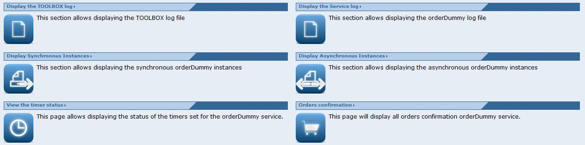

The monitoring center page allows monitoring the TOOLBOX and all the service deployed.
It displays different section depending if a service is selected or not.
If no service is selected the following page should be displayed
The monitoring center page allows monitoring the TOOLBOX and all the service deployed.
It displays different section depending if a service is selected or not.
If no service is selected the following page should be displayed
A single section is displayed
Moreover a Select a service to monitor drop down list is provided. By selecting a service using this form the additional sections reported below are displayed.
When a service is selected a page like the following should be displayed

Five sections are displayed